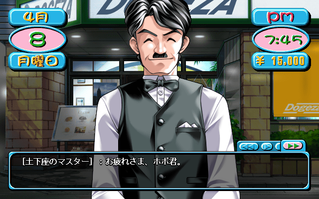
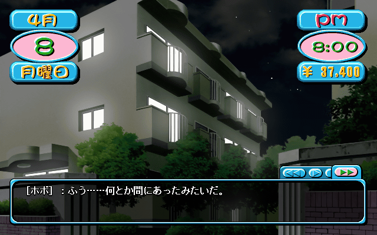
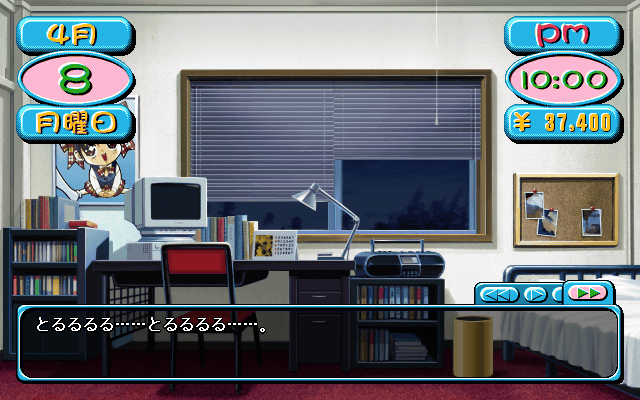

and so it begins..
I won't be covering every single line of text I come across in this playthrough, but I'll still try to make this a complete experience.
Monday:

| Dogeza Master: | "Thanks for your hard work! I hear you start classes again tomorrow." |
| hobo: | "Shit, you worked me hard all the way up to the opening ceremony." |
| Dogeza Master: | "How about you drop out of school and work for me?" |
| hobo: | "Huh?!" |
| Dogeza Master: | "It'll be really busy without you here. If you drop out of school you can work here everyday!" |
| hobo: | "What did you just say?! My parents told you to help me out!" |
| Dogeza Master: | "That they did.. but I'm sure they'll understand." |
| hobo: | "......" |
| Dogeza Master: | "......" |
| hobo: | "Hey, old man." |
| Dogeza Master: | "Hahaha.. just kidding. Here, your week's pay." |
| hobo: | "I can't believe you're paying me 400￥ an hour." |
| Dogeza Master: | "Huh? If you don't want the money you should just say so." |
| hobo: | "......" |
| Dogeza Master: | "So you're going to help me out over summer break too right?" |
| hobo: | "Absolutely not. This coffee shop is practically a concentration camp." |
The mustache hides nothing.

| hobo: | "Shit! I'll burn that place down someday!" |
| hobo: | "Look at what time it is. He always works me right up until curfew." |
| hobo: | "Man, why does this dorm's curfew have to be 8pm anyway, that's so strict." |
| Shizuka: | "What's so strict?" |
| hobo: | "Ah, Shizuka Sensei." |
| Shizuka: | "Were you talking about the curfew?" |
| hobo: | "Huh, how'd you know?" |
| Shizuka: | "You're always complaining about it." |
| hobo: | "Why don't you make the curfew 11 or so? You live here too, it's just messing with other peoples lives." |
| Shizuka: | "8 is a good time for a student to be home. Besides, it's 11 on Sundays isn't it?" |
I have to be home by 8pm on Saturdays and 11pm on Sundays. The rest of the time in the day has to be spent in the dorm. I can make phone calls, but with so few people to call in the beginning I'll be going to bed early for a few weeks.

| *phone ringing* | |
| hobo: | "Tch, I'm not in a very good mood right now." |
| *picks up phone* | |
| Minoru: | "Is hobo there?" |
| hobo: | (Why's Minoru calling me?) |
| Minoru: | "Helloooooo, is hobo there?" |
| hobo: | "I live alone Minoru, you know this. Who else could have possibly picked up the phone." |
| Minoru: | "Sheesh it's a normal greeting. Besides, I could have accidentally dialed the wrong number." |
| hobo: | "Alright then, where were you calling?" |
| Minoru: | "Uzuki High Dorms, hobo's room." |
| hobo: | "Wrong number." |
| *hangs up* |
The only place you can save is in your room. Because it takes time to get there, (15 minutes just to go from the dorm entrance to your room), I'll only be saving once a day. This makes it so I can't "cheat" by saving before each choice to see what the best answer is. I'll try not to just pick the safest choices to keep things exciting.